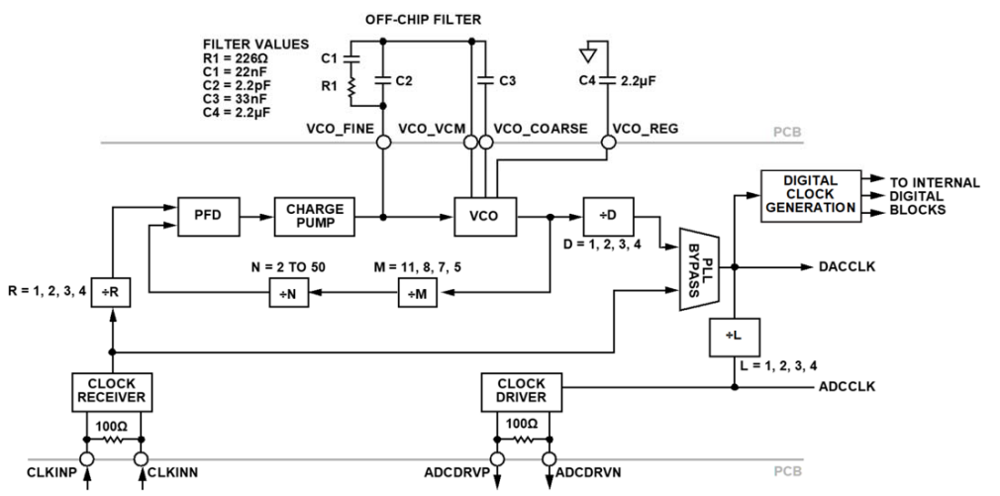

Data converters
Four types of data converters are supported: ADCs, DACs, transceivers, and ADC/DAC combinations. However, fundamentally from a clocking perspective, it does not matter if a component is a DAC or ADC, and integrated parts like transceivers only have more constraints. It is also possible to connect multiple converters into the same system and jointly present these requirements to clock chips and FPGAs also in the system.
Clocking architectures
pyadi-jif supports both direct clocking and on-board PLL generation for different converters. Assuming the desired parts support those features. Usually, an external clock generation source, like a PLL, is used to have better phase noise performance. However, routing faster clocks can be challenging above 10 GHz. If a part does support both options (like the AD9081) the internal solver does not look across both options. One mode must be selected before the solver is called. If both options are available the internal PLL is used by default. This is set through the property use_direct_clocking.
sys = adijif.system("ad9081_rx", "hmc7044", "xilinx", vcxo)
# Enable internal PLL
sys.converter.use_direct_clocking = False
Below is a diagram of the AD9081 internal clock generation PLL. pyadi-jif determines the necessary input clock (CLOCK RECEIVER) and dividers (D,M,N,R,L) for a given data rate specification.

Configuring converters
Currently converter objects cannot be used outside of the system class when leveraging solvers. Standalone they could be used to evaluate basic JESD parameters and clocks, but you cannot solve for internal dividers standalone. Here is an example below of examining different effective rates based on the JESD configuration:
cnv = adijif.ad9680()
cnv.sample_clock = 1e9
cnv.decimation = 1
cnv.L = 4
cnv.M = 2
cnv.N = 14
cnv.Np = 16
cnv.K = 32
cnv.F = 1
print(cnv.bit_clock, cnv.multiframe_clock, cnv.device_clock)
10000000000.0 31250000.0 250000000.0
Nested converters
For devices with both ADCs and DACs like transceivers or mixed-signal front-ends, nested models are used that model both ADC and DAC paths together. This is important since they can share a common device clock or reference clock but have different JESD link configurations. AD9081) is an example of a part that has such an implementation. AD9081 also has RX or TX only models.
When using a nested converter model there are sub-properties adc and dac which handle the individual configurations. When the solver is called the cross configurations are validated first then possible clocking configurations are explored. Below is an example of this type of converter model in use:
# Set up system model with nested AD9081 model
sys = adijif.system("ad9081", "hmc7044", "xilinx", 125000000)
sys.fpga.setup_by_dev_kit_name("zc706")
# Use built in PLLs
sys.converter.dac.use_direct_clocking = False
sys.converter.adc.use_direct_clocking = False
# Set DAC clocking requirements
sys.converter.dac.sample_clock = 250e6
sys.converter.dac.datapath.cduc_interpolation = 4
sys.converter.dac.L = 4
sys.converter.dac.M = 8
sys.converter.dac.N = 16
sys.converter.dac.Np = 16
sys.converter.dac.K = 32
sys.converter.dac.F = 4
# Set ADC clocking requirements
sys.converter.adc.sample_clock = 250e6
sys.converter.adc.datapath.cddc_decimations = [4]*4
sys.converter.adc.datapath.fddc_decimations = [4]*8
sys.converter.adc.datapath.fddc_enabled = [False]*8
sys.converter.adc.L = 4
sys.converter.adc.M = 8
sys.converter.adc.N = 16
sys.converter.adc.Np = 16
sys.converter.adc.K = 32
sys.converter.adc.F = 4
External PLL Clocking
Sometimes it is necessary to use an external PLL to clock a converter which may not necessarily come directly from a clock chip. This is done be inserting a PLL between the clock chip and the converter. The API do insert an external PLL is done through the system class's add_pll_inline method. Below is a basic example with the ADF4371:
vcxo = 100e6
sys = adijif.system("ad9081", "hmc7044", "xilinx", vcxo, solver="CPLEX")
sys.fpga.setup_by_dev_kit_name("zcu102")
sys.converter.clocking_option = "direct"
sys.add_pll_inline("adf4371", sys.clock, sys.converter)
The add_pll_inline method requires a name of a desired PLL, the object of the clock chip, and the object of the target converter you wish to drive with the PLL.